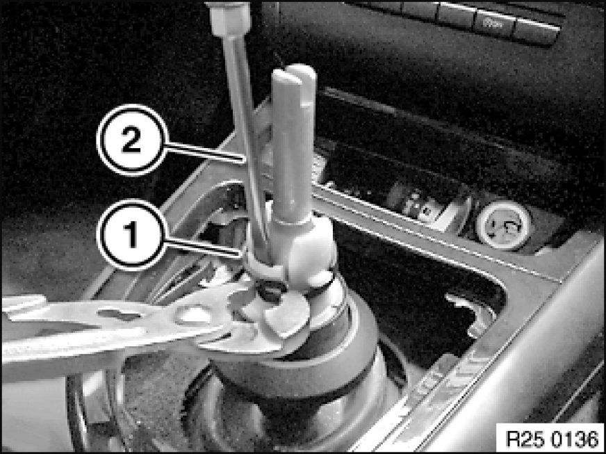
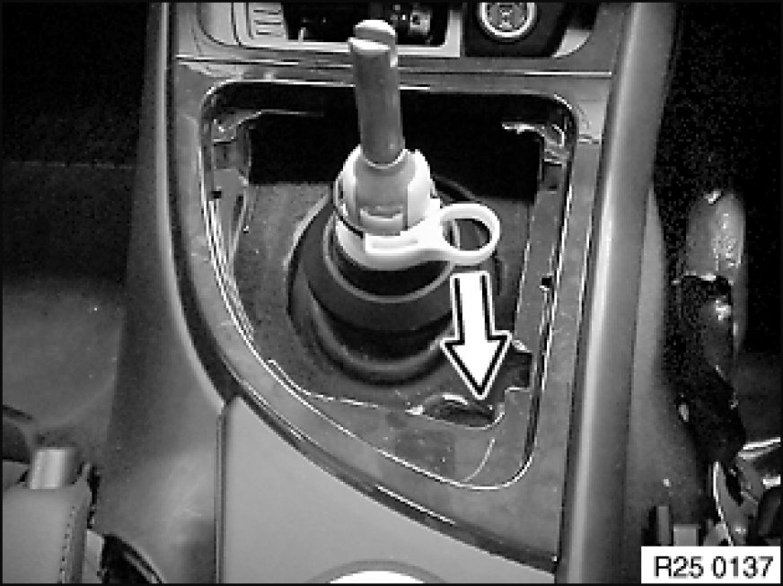

25 11 250 Removing and Installing/Replacing Vibration Damper
25 11 250 - Removing and installing/replacing vibration damper

Necessary preliminary tasks:
- Remove shift lever cover 25 11 081 Replacing Shift Lever Cover.
- Remove shift lever knob 25 11 071 Replacing Knob for Shift Lever.

Open clamp (1) on vibration damper with pliers.
Unlock vibration damper with screwdriver (2) (there is a locking notch on one side only).
Lift out vibration damper.

Installation:
In the case of a new vibration damper which has been attachment to the shift lever, only the retainer (1) still needs to be unlocked.
Make sure the vibration damper is correctly engaged in the shift lever.